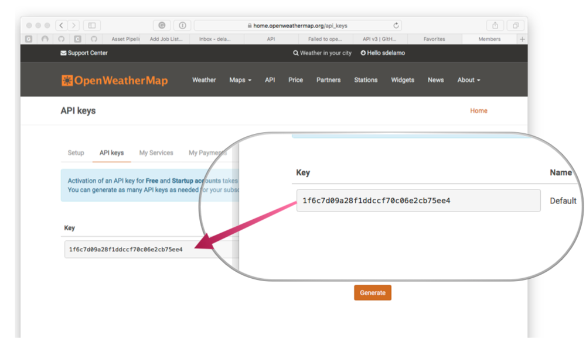
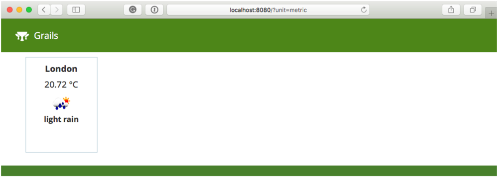

Consume and test a third-party REST API
Use Ersatz, a "mock" HTTP library, for testing code dealing with HTTP requests
Authors: Sergio del Amo
Grails Version: 3
1 Grails Training
Grails Training - Developed and delivered by the folks who created and actively maintain the Grails framework!.
2 Getting Started
In this guide you are going to create a Grails app which consumes a third party REST API. Moreover, we will use a "mock" HTTP library to test the code which interacts with this external service.
2.1 What you will need
To complete this guide, you will need the following:
-
Some time on your hands
-
A decent text editor or IDE
-
JDK 1.7 or greater installed with
JAVA_HOMEconfigured appropriately
2.2 How to complete the guide
To get started do the following:
-
Download and unzip the source
or
-
Clone the Git repository:
git clone https://github.com/grails-guides/grails-mock-http-server.git
The Grails guides repositories contain two folders:
-
initialInitial project. Often a simple Grails app with some additional code to give you a head-start. -
completeA completed example. It is the result of working through the steps presented by the guide and applying those changes to theinitialfolder.
To complete the guide, go to the initial folder
-
cdintograils-guides/grails-mock-http-server/initial
and follow the instructions in the next sections.
You can go right to the completed example if you cd into grails-guides/grails-mock-http-server/complete
|
3 Writing the Application
The first step is to add a HTTP client library to our project. Add the next dependency:
link:{sourcedir}/build.gradle[role=include]3.1 Open Weather Map
OpenWeatherMap is a web application which offers an API which allows you to:
Get current weather, daily forecast for 16 days, and 3-hourly forecast 5 days for your city. Helpful stats, graphics, and this day in history charts are available for your reference. Interactive maps show precipitation, clouds, pressure, wind around your location.
They have a FREE plan which allows you to get the Current Weather Data of a city.
After you register, you get an API Key. You will need an API key to interact with the Open Weather Map API.

| the API key may take several minutes to become active. |
3.2 Parse Response into Groovy classes
Create several Groovy POGOs (Plain Old Groovy Objects) to map the OpenWeatherMap JSON response to classes.
link:{sourcedir}/src/main/groovy/org/openweathermap/CurrentWeather.groovy[role=include]link:{sourcedir}/src/main/groovy/org/openweathermap/Clouds.groovy[role=include]link:{sourcedir}/src/main/groovy/org/openweathermap/Coordinate.groovy[role=include]link:{sourcedir}/src/main/groovy/org/openweathermap/Rain.groovy[role=include]link:{sourcedir}/src/main/groovy/org/openweathermap/Unit.groovy[role=include]link:{sourcedir}/src/main/groovy/org/openweathermap/Weather.groovy[role=include]link:{sourcedir}/src/main/groovy/org/openweathermap/Sys.groovy[role=include]link:{sourcedir}/src/main/groovy/org/openweathermap/Wind.groovy[role=include]3.3 Open Weather Service
Create the next service:
link:{sourcedir}/grails-app/services/org/openweathermap/OpenweathermapService.groovy[role=include]
link:{sourcedir}/grails-app/services/org/openweathermap/OpenweathermapService.groovy[role=include]
link:{sourcedir}/grails-app/services/org/openweathermap/OpenweathermapService.groovy[role=include]
}| 1 | To get the current weather, do a GET request providing the city name, country code and API Key as query parameters. |
| 2 | In case of a 200 - OK - response, parse the JSON data into Groovy classes. |
| 3 | if the answer is not 200. For example, 401; the method returns null. |
The previous service uses several configuration parameters. Define them in application.yml
link:{sourcedir}/grails-app/conf/application.yml[role=include]3.4 Parse Response into Groovy Classes
Create the next class to encapsulte the parsing of JSON payload into Groovy Classes.
link:{sourcedir}/grails-app/utils/org/openweathermap/OpenweathermapParser.groovy[role=include]3.5 Ersatz
To test the networking code, add a dependency to Ersatz
link:{sourcedir}/build.gradle[role=include]Ersatz Server is a "mock" HTTP server library for testing HTTP clients. It allows for server-side request/response expectations to be configured so that your client library can make real HTTP calls and get back real pre-configured responses rather than fake stubs.
First, implement a test which verifies that the OpenweathermapService.currentWeather method returns
null when the REST API returns 401. For example, when the API Key is invalid.
link:{sourcedir}/src/test/groovy/org/openweathermap/OpenweathermapServiceSpec.groovy[role=include]
link:{sourcedir}/src/test/groovy/org/openweathermap/OpenweathermapServiceSpec.groovy[role=include]
}| 1 | Declare expectations, a GET request to the OpenWeather path with query parameters. |
| 2 | Declare conditions to be verified, in this example we want to to verify the endpoint is hit only one time. |
| 3 | Tell the mock server to return 401 for this test. |
| 4 | Ersatz starts an embedded Undertow server, root the networking requests to this server instead of to the OpenWeather API server. |
| 5 | Verify the ersatz servers conditions. |
| 6 | Rember to stop the server |
Next, test that when the server returns 200 and a JSON payload, the JSON payload is parsed correctly into Groovy classes.
link:{sourcedir}/src/test/groovy/org/openweathermap/OpenweathermapServiceSpec.groovy[role=include]
link:{sourcedir}/src/test/groovy/org/openweathermap/OpenweathermapServiceSpec.groovy[role=include]
}| 1 | Declare a response encoder to convert a Map into application/json content using an Ersatz-provided encoder. |
| 2 | Define the response content as a Map which will be converted to JSON by the defined encoder (above). |
| As of Ersatz version 1.5.0 the internal Undertow embedded server version is out of sync with Grails. If you use Undertow as your server for Grails you may have classpath collisions or odd errors. This can be avoided by using the "safe" (shadowed) version of the Ersatz dependency (see the Shadow Jar section of the Ersatz User Guide for more details). |
3.6 Run Tests
To run the tests:
./grailsw
grails> test-app
grails> open test-reportor
./gradlew check
open build/reports/tests/index.html3.7 Root Url to Weather Controller
Create a HomeController which uses the previous service:
link:{sourcedir}/grails-app/controllers/demo/HomeController.groovy[role=include]In UrlMapping.groovy map the root URL to this controller:
"/"(controller: 'home')`3.8 TagLib
Create a taglib to help you, to encapsulate some rendering aspects:
link:{sourcedir}/grails-app/taglib/org/openweathermap/OpenweathermapTagLib.groovy[role=include]3.9 View
Create the next GSPs to render the gathered Weather information as an HTML page.
link:{sourcedir}/grails-app/views/home/index.gsp[role=include]link:{sourcedir}/grails-app/views/openweather/_currentWeather.gsp[role=include]Add the next CSS snippet to style the weather forecast.
.weatherBlock {
width: 150px;
height: 200px;
margin: 10px auto;
text-align: center;
border: 1px solid #c0d3db;
float: left;
}4 Running the Application
To run the application use the ./gradlew bootRun command which will start the application on port 8080.
If you setup a valid API Key in application.yml, you will see the London weather prediction.
